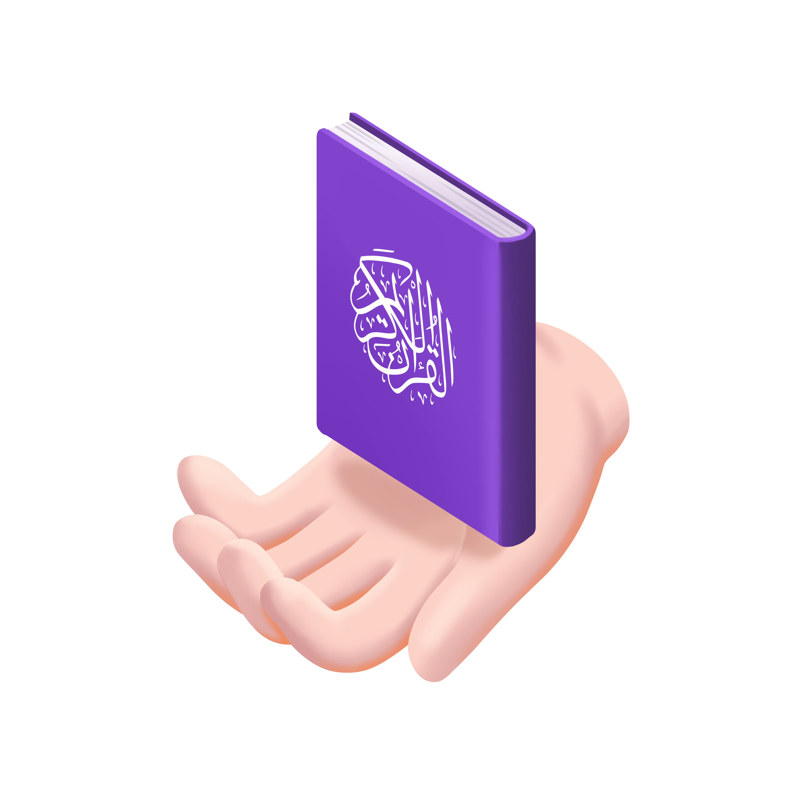

Go Ngaji Sahabat Perjalanan Al-Qur'an-mu
Platform digital Islami yang dirancang untuk membantu umat Muslim belajar, menghafal, dan memahami Al-Qur'an serta ajaran Islam dengan cara yang lebih modern dan menyenangkan.
Menghadirkan solusi pembelajaran Islam berbasis teknologi, yang mudah diakses oleh semua kalangan, serta mendukung proses ngaji, tilawah, dan pembinaan iman secara berkelanjutan.

Go Ngaji cocok untuk anak-anak, remaja, orang tua, guru ngaji, hingga lembaga pendidikan yang ingin menjadikan aktivitas ngaji lebih interaktif dan relevan di era digital.
Pilih paket yang sesuai dengan kebutuhan belajar Anda
Rp
Akses eksklusif khusus pemilik Mushaf Syaamil Qur'an premium!
RP
Rp
Gunakan Mushaf Syaamil Haji & Umrah untuk membuka semua fitur!
Temukan jawaban untuk pertanyaan umum tentang Go Ngaji dan layanan pembelajaran Al-Qur'an digital kami